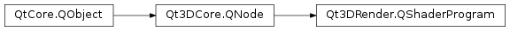

Qt3DRender.QShaderProgram¶
Synopsis¶
Functions¶
- def
computeShaderCode() - def
fragmentShaderCode() - def
geometryShaderCode() - def
log() - def
setShaderCode(type, shaderCode) - def
shaderCode(type) - def
status() - def
tessellationControlShaderCode() - def
tessellationEvaluationShaderCode() - def
vertexShaderCode()
Slots¶
- def
setComputeShaderCode(computeShaderCode) - def
setFragmentShaderCode(fragmentShaderCode) - def
setGeometryShaderCode(geometryShaderCode) - def
setTessellationControlShaderCode(tessellationControlShaderCode) - def
setTessellationEvaluationShaderCode(tessellationEvaluationShaderCode) - def
setVertexShaderCode(vertexShaderCode)
Signals¶
- def
computeShaderCodeChanged(computeShaderCode) - def
fragmentShaderCodeChanged(fragmentShaderCode) - def
geometryShaderCodeChanged(geometryShaderCode) - def
logChanged(log) - def
statusChanged(status) - def
tessellationControlShaderCodeChanged(tessellationControlShaderCode) - def
tessellationEvaluationShaderCodeChanged(tessellationEvaluationShaderCode) - def
vertexShaderCodeChanged(vertexShaderCode)
Static functions¶
- def
loadSource(sourceUrl)
Detailed Description¶
Encapsulates a Shader Program.
A shader program consists of several different shaders, such as vertex and fragment shaders.
Qt3D will automatically populate a set of default uniforms if they are encountered during the shader instrospection phase.
+——————————————–+——————————+-+——————————————————————-+++ |Default Uniform |Associated Qt3D Parameter name |GLSL declaration | +——————————————–+——————————+-+——————————————————————-+++ |ModelMatrix |modelMatrix |uniform mat4 modelMatrix; | +——————————————–+——————————+-+——————————————————————-+++ |ViewMatrix |viewMatrix |uniform mat4 viewMatrix; | +——————————————–+——————————+-+——————————————————————-+++ |ProjectionMatrix |projectionMatrix |uniform mat4 projectionMatrix; | +——————————————–+——————————+-+——————————————————————-+++ |ModelViewMatrix |modelView |uniform mat4 modelView; | +——————————————–+——————————+-+——————————————————————-+++ |ViewProjectionMatrix |viewProjectionMatrix |uniform mat4 viewProjectionMatrix; | +——————————————–+——————————+-+——————————————————————-+++ |ModelViewProjectionMatrix |modelViewProjection mvp |uniform mat4 modelViewProjection; uniform mat4 mvp; | +——————————————–+——————————+-+——————————————————————-+++ |InverseModelMatrix |inverseModelMatrix |uniform mat4 inverseModelMatrix; | +——————————————–+——————————+-+——————————————————————-+++ |InverseViewMatrix |inverseViewMatrix |uniform mat4 inverseViewMatrix; | +——————————————–+——————————+-+——————————————————————-+++ |InverseProjectionMatrix |inverseProjectionMatrix |uniform mat4 inverseProjectionMatrix; | +——————————————–+——————————+-+——————————————————————-+++ |InverseModelViewMatrix |inverseModelView |uniform mat4 inverseModelView; | +——————————————–+——————————+-+——————————————————————-+++ |InverseViewProjectionMatrix |inverseViewProjectionMatrix |uniform mat4 inverseViewProjectionMatrix; | +——————————————–+——————————+-+——————————————————————-+++ |InverseModelViewProjectionMatrix |inverseModelViewProjection |uniform mat4 inverseModelViewProjection; | +——————————————–+——————————+-+——————————————————————-+++ |ModelNormalMatrix |modelNormalMatrix |uniform mat3 modelNormalMatrix; | +——————————————–+——————————+-+——————————————————————-+++ |ModelViewNormalMatrix |modelViewNormal |uniform mat3 modelViewNormal; | +——————————————–+——————————+-+——————————————————————-+++ |ViewportMatrix |viewportMatrix |uniform mat4 viewportMatrix; | +——————————————–+——————————+-+——————————————————————-+++ |InverseViewportMatrix |inverseViewportMatrix |uniform mat4 inverseViewportMatrix; | +——————————————–+——————————+-+——————————————————————-+++ |AspectRatio (surface width / surface height)|aspectRatio |uniform float aspectRatio; | +——————————————–+——————————+-+——————————————————————-+++ |Exposure |exposure |uniform float exposure; | +——————————————–+——————————+-+——————————————————————-+++ |Gamma |gamma |uniform float gamma; | +——————————————–+——————————+-+——————————————————————-+++ |Time (in nano seconds) |time |uniform float time; | +——————————————–+——————————+-+——————————————————————-+++ |EyePosition |eyePosition |uniform vec3 eyePosition; | +——————————————–+——————————+-+——————————————————————-+++ |SkinningPalette |skinningPalette[0] |const int maxJoints = 100; uniform mat4 skinningPalette[maxJoints]; | +——————————————–+——————————+-+——————————————————————-+++
-
class
PySide2.Qt3DRender.Qt3DRender.QShaderProgram([parent=nullptr])¶ Parameters: parent – PySide2.Qt3DCore.Qt3DCore::QNode
-
PySide2.Qt3DRender.Qt3DRender.QShaderProgram.ShaderType¶ This enum identifies the type of shader used.
Constant Description Qt3DRender.QShaderProgram.Vertex Vertex shader Qt3DRender.QShaderProgram.Fragment Fragment shader Qt3DRender.QShaderProgram.TessellationControl Tesselation control shader Qt3DRender.QShaderProgram.TessellationEvaluation Tesselation evaluation shader Qt3DRender.QShaderProgram.Geometry Geometry shader Qt3DRender.QShaderProgram.Compute Compute shader
-
PySide2.Qt3DRender.Qt3DRender.QShaderProgram.Status¶ This enum identifies the status of shader used.
Constant Description Qt3DRender.QShaderProgram.NotReady The shader hasn’t been compiled and linked yet Qt3DRender.QShaderProgram.Ready The shader was successfully compiled Qt3DRender.QShaderProgram.Error An error occurred while compiling the shader
-
PySide2.Qt3DRender.Qt3DRender.QShaderProgram.computeShaderCode()¶ Return type: PySide2.QtCore.QByteArraySee also
PySide2.Qt3DRender.Qt3DRender::QShaderProgram.setComputeShaderCode()
-
PySide2.Qt3DRender.Qt3DRender.QShaderProgram.computeShaderCodeChanged(computeShaderCode)¶ Parameters: computeShaderCode – PySide2.QtCore.QByteArray
-
PySide2.Qt3DRender.Qt3DRender.QShaderProgram.fragmentShaderCode()¶ Return type: PySide2.QtCore.QByteArraySee also
PySide2.Qt3DRender.Qt3DRender::QShaderProgram.setFragmentShaderCode()
-
PySide2.Qt3DRender.Qt3DRender.QShaderProgram.fragmentShaderCodeChanged(fragmentShaderCode)¶ Parameters: fragmentShaderCode – PySide2.QtCore.QByteArray
-
PySide2.Qt3DRender.Qt3DRender.QShaderProgram.geometryShaderCode()¶ Return type: PySide2.QtCore.QByteArraySee also
PySide2.Qt3DRender.Qt3DRender::QShaderProgram.setGeometryShaderCode()
-
PySide2.Qt3DRender.Qt3DRender.QShaderProgram.geometryShaderCodeChanged(geometryShaderCode)¶ Parameters: geometryShaderCode – PySide2.QtCore.QByteArray
-
static
PySide2.Qt3DRender.Qt3DRender.QShaderProgram.loadSource(sourceUrl)¶ Parameters: sourceUrl – PySide2.QtCore.QUrlReturn type: PySide2.QtCore.QByteArrayReturns the shader code loaded from
sourceUrl.
-
PySide2.Qt3DRender.Qt3DRender.QShaderProgram.log()¶ Return type: unicode
-
PySide2.Qt3DRender.Qt3DRender.QShaderProgram.logChanged(log)¶ Parameters: log – unicode
-
PySide2.Qt3DRender.Qt3DRender.QShaderProgram.setComputeShaderCode(computeShaderCode)¶ Parameters: computeShaderCode – PySide2.QtCore.QByteArraySee also
PySide2.Qt3DRender.Qt3DRender::QShaderProgram.computeShaderCode()
-
PySide2.Qt3DRender.Qt3DRender.QShaderProgram.setFragmentShaderCode(fragmentShaderCode)¶ Parameters: fragmentShaderCode – PySide2.QtCore.QByteArraySee also
PySide2.Qt3DRender.Qt3DRender::QShaderProgram.fragmentShaderCode()
-
PySide2.Qt3DRender.Qt3DRender.QShaderProgram.setGeometryShaderCode(geometryShaderCode)¶ Parameters: geometryShaderCode – PySide2.QtCore.QByteArraySee also
PySide2.Qt3DRender.Qt3DRender::QShaderProgram.geometryShaderCode()
-
PySide2.Qt3DRender.Qt3DRender.QShaderProgram.setShaderCode(type, shaderCode)¶ Parameters: - type –
PySide2.Qt3DRender.Qt3DRender::QShaderProgram.ShaderType - shaderCode –
PySide2.QtCore.QByteArray
Sets the shader code for
typeof shader to theshaderCode.See also
PySide2.Qt3DRender.Qt3DRender::QShaderProgram.shaderCode()- type –
-
PySide2.Qt3DRender.Qt3DRender.QShaderProgram.setTessellationControlShaderCode(tessellationControlShaderCode)¶ Parameters: tessellationControlShaderCode – PySide2.QtCore.QByteArraySee also
PySide2.Qt3DRender.Qt3DRender::QShaderProgram.tessellationControlShaderCode()
-
PySide2.Qt3DRender.Qt3DRender.QShaderProgram.setTessellationEvaluationShaderCode(tessellationEvaluationShaderCode)¶ Parameters: tessellationEvaluationShaderCode – PySide2.QtCore.QByteArraySee also
PySide2.Qt3DRender.Qt3DRender::QShaderProgram.tessellationEvaluationShaderCode()
-
PySide2.Qt3DRender.Qt3DRender.QShaderProgram.setVertexShaderCode(vertexShaderCode)¶ Parameters: vertexShaderCode – PySide2.QtCore.QByteArraySee also
PySide2.Qt3DRender.Qt3DRender::QShaderProgram.vertexShaderCode()
-
PySide2.Qt3DRender.Qt3DRender.QShaderProgram.shaderCode(type)¶ Parameters: type – PySide2.Qt3DRender.Qt3DRender::QShaderProgram.ShaderTypeReturn type: PySide2.QtCore.QByteArrayReturns the shader code for
type.See also
PySide2.Qt3DRender.Qt3DRender::QShaderProgram.setShaderCode()
-
PySide2.Qt3DRender.Qt3DRender.QShaderProgram.status()¶ Return type: PySide2.Qt3DRender.Qt3DRender::QShaderProgram.StatusReturns the status of the current shader program.
-
PySide2.Qt3DRender.Qt3DRender.QShaderProgram.statusChanged(status)¶ Parameters: status – PySide2.Qt3DRender.Qt3DRender::QShaderProgram.Status
-
PySide2.Qt3DRender.Qt3DRender.QShaderProgram.tessellationControlShaderCode()¶ Return type: PySide2.QtCore.QByteArraySee also
PySide2.Qt3DRender.Qt3DRender::QShaderProgram.setTessellationControlShaderCode()
-
PySide2.Qt3DRender.Qt3DRender.QShaderProgram.tessellationControlShaderCodeChanged(tessellationControlShaderCode)¶ Parameters: tessellationControlShaderCode – PySide2.QtCore.QByteArray
-
PySide2.Qt3DRender.Qt3DRender.QShaderProgram.tessellationEvaluationShaderCode()¶ Return type: PySide2.QtCore.QByteArraySee also
PySide2.Qt3DRender.Qt3DRender::QShaderProgram.setTessellationEvaluationShaderCode()
-
PySide2.Qt3DRender.Qt3DRender.QShaderProgram.tessellationEvaluationShaderCodeChanged(tessellationEvaluationShaderCode)¶ Parameters: tessellationEvaluationShaderCode – PySide2.QtCore.QByteArray
-
PySide2.Qt3DRender.Qt3DRender.QShaderProgram.vertexShaderCode()¶ Return type: PySide2.QtCore.QByteArraySee also
PySide2.Qt3DRender.Qt3DRender::QShaderProgram.setVertexShaderCode()
-
PySide2.Qt3DRender.Qt3DRender.QShaderProgram.vertexShaderCodeChanged(vertexShaderCode)¶ Parameters: vertexShaderCode – PySide2.QtCore.QByteArray
© 2018 The Qt Company Ltd. Documentation contributions included herein are the copyrights of their respective owners. The documentation provided herein is licensed under the terms of the GNU Free Documentation License version 1.3 as published by the Free Software Foundation. Qt and respective logos are trademarks of The Qt Company Ltd. in Finland and/or other countries worldwide. All other trademarks are property of their respective owners.